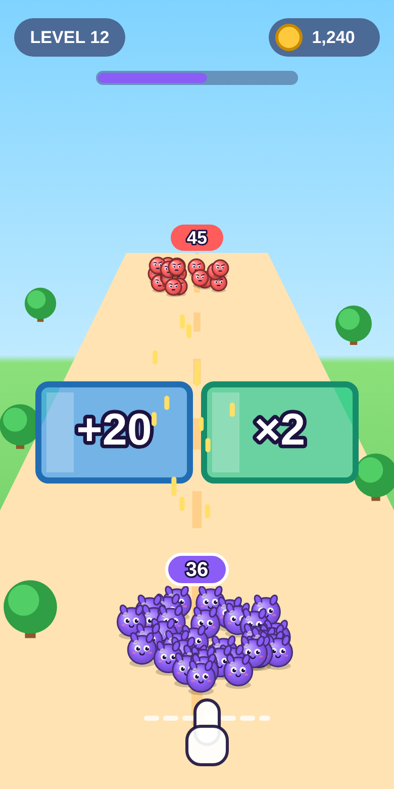
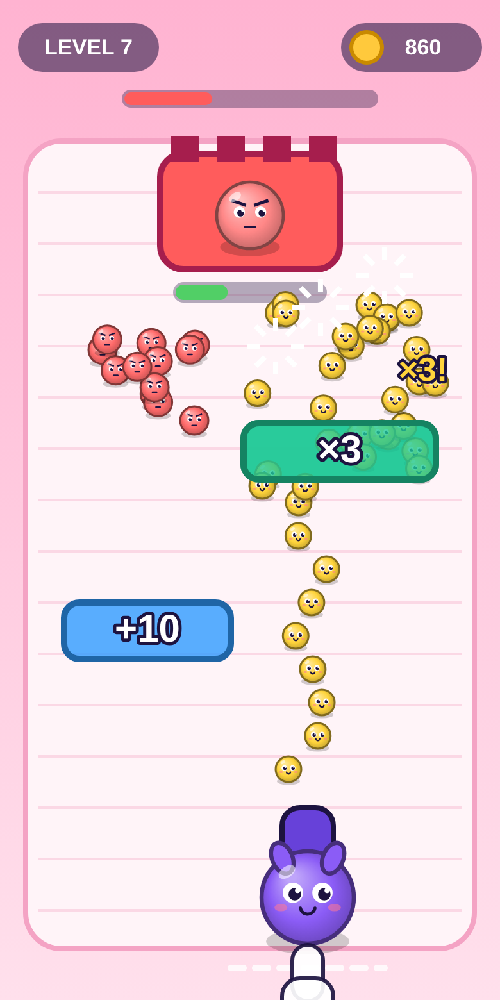
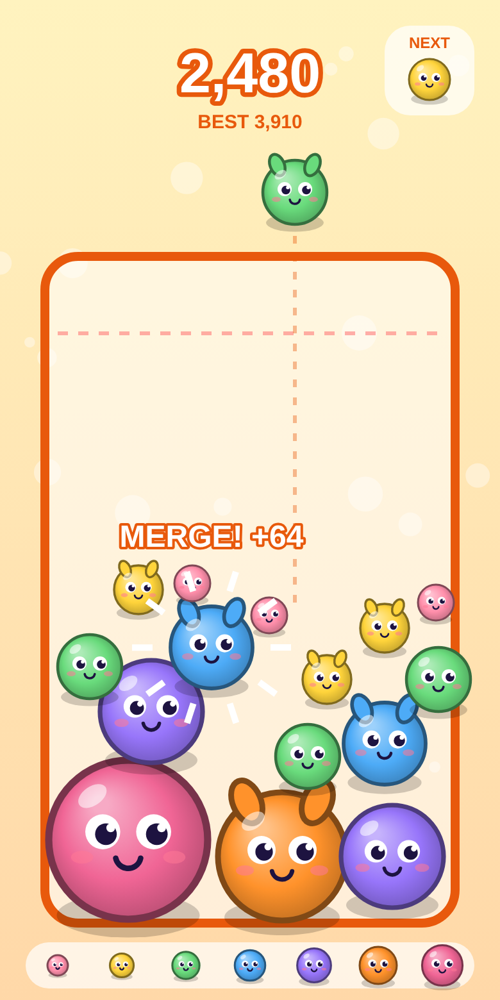
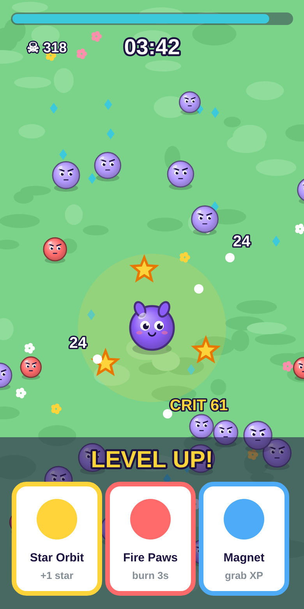

Boonty mini-game · concept round · 24 Sep 2026
Four games we could build. Pick one.
Each concept below is modelled on a mechanic that works in social-media game ads, redrawn with one cute Boonty mascot so you can judge the look as well as the idea. The screens are static mockups, not gameplay. Once you choose, I build a playable prototype of that one game only.
Instant-read mechanics winAds that perform show one tap or one swipe and a visible result: gates, merges, numbers going up.
Hybrid-casual is where hits are nowA hypercasual core loop plus a light meta (coins, upgrades, unlocks) keeps players coming back.
Near-fail keeps people watchingA close call ("almost lost!") makes the next attempt feel within reach. That is the "one more try" hook.
The concepts
A · Army runner

Boonty Rush
Like: Count Masters, Last War ads
- Control
- Drag left and right while running forward.
- Loop (30 to 45 s)
- Steer through + and × gates to grow your crowd, shoot what's ahead, then clash with the enemy crowd or a boss at the finish.
- Hook
- Big numbers every two seconds and a showdown at the end.
- Risk
- Once you learn that ×2 beats +20, choices go shallow and you mostly just watch. Needs a fake-3D road.
B · Recommended

Boonty Blaster
Like: Mob Control
- Control
- Hold to fire a stream of little Boonties and drag to aim.
- Loop (45 to 90 s)
- Aim the stream through multiplier gates (×3, +10, some moving) to swarm enemy waves and knock down their castle before they reach you.
- Hook
- Your finger is always doing something, and one good gate turns 10 minis into 30.
- Risk
- Hundreds of sprites on screen at once, which canvas handles fine. Enemy waves need careful tuning.
C · Cute puzzle

Boonty Drop
Like: Suika / watermelon game
- Control
- Tap where you want to drop the next creature.
- Loop (2 to 5 min)
- Two identical creatures merge into the next, bigger one. Chain merges for points. You lose when the jar overflows the line.
- Hook
- Chain reactions and a "just one more" high score. The cutest of the four.
- Risk
- Very close to a famous game, and there's no power fantasy. Needs good circle physics.
D · Action roguelite

Boonty Survivors
Like: Survivor.io, Vampire Survivors
- Control
- Drag to move. Attacks fire automatically.
- Loop (5 to 10 min)
- Collect XP gems. Each level up offers 3 upgrade cards, and you survive growing hordes to the timer.
- Hook
- Building a broken combo of upgrades. The deepest long-term appeal of the four.
- Risk
- Biggest scope and hardest to balance. Sessions are long, and it takes more than 10 seconds to understand.
How they score against the brief
Scored 1 to 5 against the priorities in CLAUDE.md: fun, then clarity, then polish, then features, with technical simplicity as a constraint. These are my estimates before anyone has played anything.
My recommendation
Build Boonty Blaster
- It's the mechanic from your brief (gates that add characters and power), and it's active: you aim and time every second instead of just steering.
- It's natively 2D and top-down, so it runs smoothly on mobile browsers with no fake-3D tricks and no physics engine.
- Swarms of cute Boonties pouring through a ×3 gate give us both of your directions, army power and a cute character, in one game.
- Levels are 45 to 90 seconds with a clear win or lose, which suits "one more level".
Runner-up: Boonty Drop, if you'd rather have a pure cute, relaxing high-score game. It's the smallest build, but it's also the least original.
What I need from you
- Pick a concept (A, B, C or D), or ask for a mix.
- Boonty branding: do you have a logo, colours or a mascot? If not, I'll carry on with the purple "Boo" creature shown here.
- One thing to check in CLAUDE.md: milestone M1 says "party loop: players, rounds, mini-games, sips". That looks like it was copied from a drinking/party game. I'll read M1 as "playable prototype of the chosen game" unless you say otherwise.